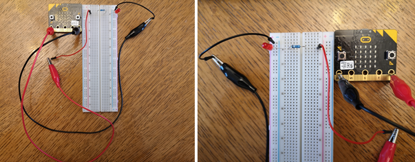

Projektni zadatak - Semafor¶
Semafor je svjetlo i igra vrlo važnu ulogu u regulaciji prometa. Uglavnom su postavljeni na raskrižjima.

Prvi semafor postavljen je 10. prosinca 1868. u Londonu, a dizajnirao ga je John Peake Knight. Policijski službenik je ručno kontrolirao ovaj semafor. 1917. semafori sa prekidačima prvi put su se pojavili u Salk Lake Cityju. Prvi automatizirani tajmer s timerom pojavio se u Americi u Houstonu 1922. godine, a u Europi u Engleskoj 1927. godine. U Hrvatskoj je prvi semafor postavljen u Rijeci 1941., a Zagreb ga je dobio 1963.
Boja, oblik i veličina svijetlosne signalizacije na semaforu određeni su međunarodnim standardima:
stop – crveno
priprema za polazak - crvena i žuta u isto vrijeme
dozvoljeni prolaz - zeleno
nagovještaj zabrane prolaska - žuto.
Boje za uključivanje i isključivanje daju se određenim redoslijedom, točnije u određenim vremenskim intervalima.
Koristeći Micro:bit stvorit ćemo semafor koji će se, poput stvarnih semafora, uključivati crvena, žuta i zelena svjetla za određeno vremensko razdoblje.
Da biste stvorili Semafor, trebate:
1 Micro:bit
protoboard
stirodur
3 diode (crvena, zelena i žuta)
3 otpornika
4 krokodilke
4 žice različitih duljina.
Prije nego što počnemo spajati Micro: bit na diode, podsjetimo se da Micro:bit ima 25 pinova, točnije ima pet velikih pinova: 0, 1, 2, 3V i GND. Ostalih 20 pinova mogu se koristiti za povezivanje s dodatnim uređajima.

Micro:bit korištenjem žice/krokodilki putem GND-a povezujemo na bilo koji pin na protobordu tako da ga možemo povezati s GND diodom.
Za rad diode je potrebna snaga pa ćemo ograničenjem napajanja koristiti otpornik (pruža neki otpor koji ograničava protok struje i kontrolira napon u krugu).
Na slici ispod prikazana je veza Micro:bit-a i jedne Led diode:
Povezujemo Micro:bit preko pin P0 i pin na protobord na lijevoj strani otpornika (slika). Duži pin (+) LED-a povežemo preko krokodilki da pričvrstimo P0 na Micro:bit-u, a kraći (-) s krokodilkama na pin GND (kako je dolje prikazano).
Na isti način povezujemo ostale dve Led diode.

Pomoću ove logike povezivanja ćemo fizički napraviti semafor od stirodur.
Programiranje
Moramo programirati uključivanje i isključivati LED dioda.
Korak 1
Idite na https://makecode.microbit.org/.
Korak 2
Kreirajte novi projekt.
Sada želimo isprogramirati uključivanje i isključivanje dioda.
Korak 3
Da bismo isprogramirali uključivanje i isključenje dioda, iz kategorije  u blok
u blok  povlačimo blok
povlačimo blok  iz kategorije
iz kategorije Advanced - Pins.
Da bi se lampica upalila, u prostoru  treba unijeti vrijednost 1. Ako je vrijednost postavljena na nulu, svjetla će se ugasiti.
treba unijeti vrijednost 1. Ako je vrijednost postavljena na nulu, svjetla će se ugasiti.

Pri uključivanju i isključivanju potrebno je postaviti određeni vremenski interval unutar kojeg se događaju promjene.
Držite svjetlo 4 sekunde isključeno 2 sekunde. Za to koristimo blok  iz kategorije
iz kategorije Basic. U polje  unosimo 4000 ms (što je 4 sekunde) za uključeno svjetlo i 2000 za isključeno svjetlo.
unosimo 4000 ms (što je 4 sekunde) za uključeno svjetlo i 2000 za isključeno svjetlo.
Završni izgled semafora:

Klikom na tipku  ili tipku
ili tipku  preuzmite .hex datoteku na vaše računalo. Povlačenjem datoteke na Micro:bit on je spreman za rad.
preuzmite .hex datoteku na vaše računalo. Povlačenjem datoteke na Micro:bit on je spreman za rad.